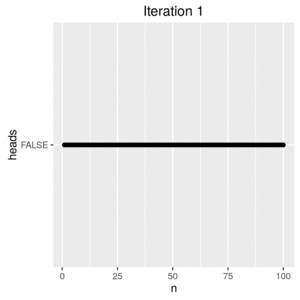

I am a sucker for FiveThirtyEight's Riddler column, specifically the Riddler Express, bite-sized mathematical or computational challenges that are little more than intellectual whimsy but are oh-so satisfying to pick apart. This week is no exception:
You place 100 coins heads up in a row and number them by position, with the coin all the way on the left No. 1 and the one on the rightmost edge No. 100. Next, for every number N, from 1 to 100, you flip over every coin whose position is a multiple of N. For example, first you’ll flip over all the coins, because every number is a multiple of 1. Then you’ll flip over all the even-numbered coins, because they’re multiples of 2. Then you’ll flip coins No. 3, 6, 9, 12 … And so on.
What do the coins look like when you’re done? Specifically, which coins are heads down?
Actually solving this is straightforward. Here's a few lines of Python that print out all the face-up numbers. The hardest part is making sure not to have any off-by-one errors!
coins = [True] * 100
for x in range (1, 101):
for y in range(0, 100):
if (y + 1) % x == 0:
coins[y] = not coins[y]
if coins[x - 1] == False:
print(x)
Create an array of 100 boolean values, with True representing heads.
Run a nested for loop to iterate over all the coins and all the numbers, flipping as needed based on a modulo check.
We can print in the same external loop because we're not going to find any positive integers with factors greater than themselves.
For example, the greatest factor of 10 is itself, so after 10 loops, we know that the 10th coin isn't going to flip again.
What we find is that just 10% of our coins end up face down.
But before that result, a brief digression.
As part sanity check, part desire to make something cool, I wanted to see what was happening with each iteration over the coins. There are many approaches to making animated graphs, but I opted for a simple pipeline:
Here's the relevant R code:
### Create data frame
n <- seq(1, 100, 1)
heads <- rep(TRUE, 100)
df <- data.frame(n, heads)
### Flip coins
library(ggplot2)
for (x in 1:100) {
for (y in 1:100) {
if ((y %% x) == 0) {
df$heads[y] <- !df$heads[y]
}
}
ggplot(df, aes(n, heads), size = 1) +
geom_point() +
ggtitle(paste("Iteration", x))
if (x < 10) { ## Add leading 00 to preserve file order
title <- paste0("coins", "00", x, ".png")
} else if (x < 100) { ## Add leading 0
title <- paste0("coins", "0", x, ".png")
} else {
title <- paste0("coins", x, ".png")
}
ggsave(title, width = 4, height = 4)
}
And then the GIF is just the following shell call:
convert *.png coin_flip.gif
After resizing, we get the following:

Now we see a pattern in the tails coins–they get further and further spread out. Turning our attention to the list of tails numbers I've been withholding for the last few paragraphs, we see why.
1 4 9 16 25 36 49 64 81 100
These are precisely the perfect squares in the first 100 natural numbers. Sadly, the Riddler does not reward superfluous mathematical inquiry, but I've never let that stop me before, and so one might ask why the squares are showing up here. It's not a hard mystery, but it does require algebra.1 A numbers factors are simply the numbers that evenly divide it. They come in pairs. Consider the number 54. Because 54 / 6 = 9, 6 and 9 are both factors (hence why 54 / 9 = 6 also works). And going back to the original riddle, a coin will finish heads if it is flipped an even number of times so that every tails is canceled by a heads. In other words, this riddle is really asking which numbers 1-100 have an odd number of factors.2
Perfect squares have odd numbers of factors because they have a pair of factors that are identical: their square root. The number 4, a perfect square, has three factors: 1, 2, 4. 1 goes with 4, but 2 goes with itself. If a number has n pairs of other factors, then there are 2n+1 total factors, which makes for an odd number of factors. Mystery solved, and another job well done.
Although the algebra behind factoring is more complex than what normally makes it into cartoons, Futurama does have an actual theorem to its credit to solve a body swapping plot in one of its episodes.
But you don't get FiveThirtyEight's readership by phrasing it like that.